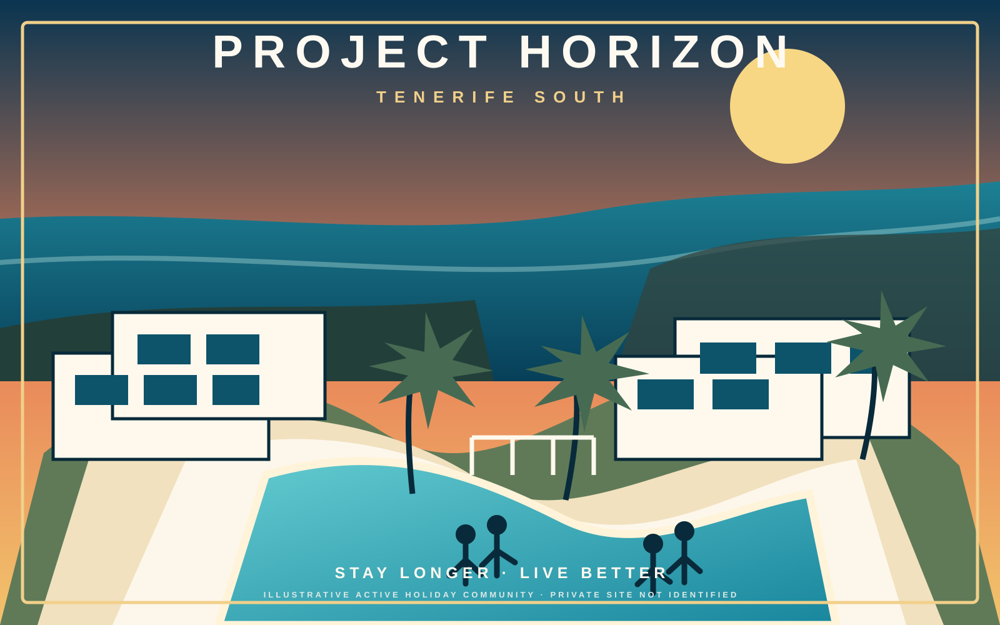
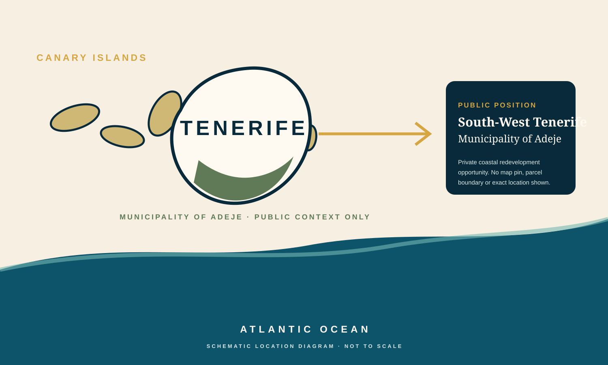
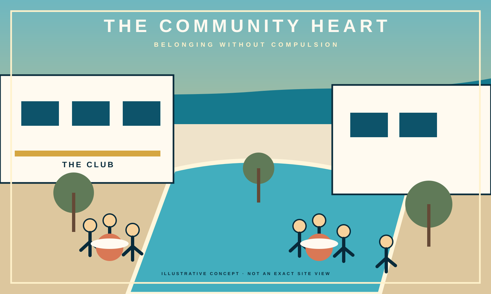
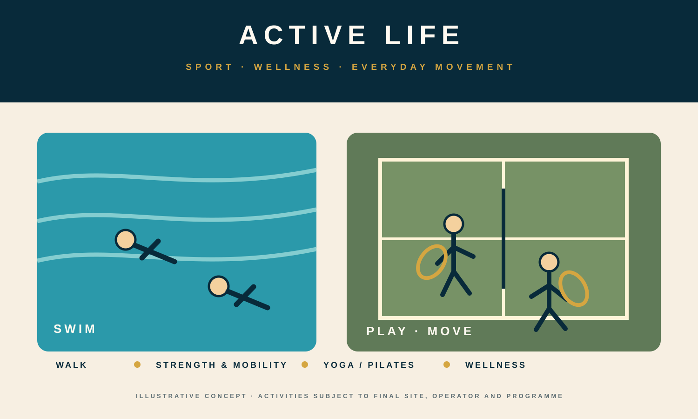
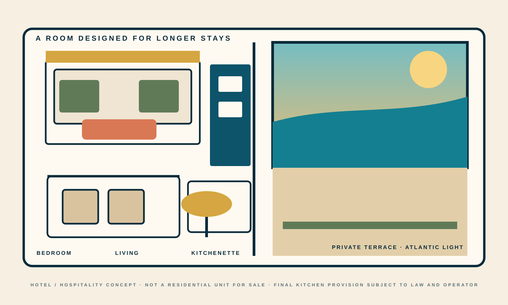
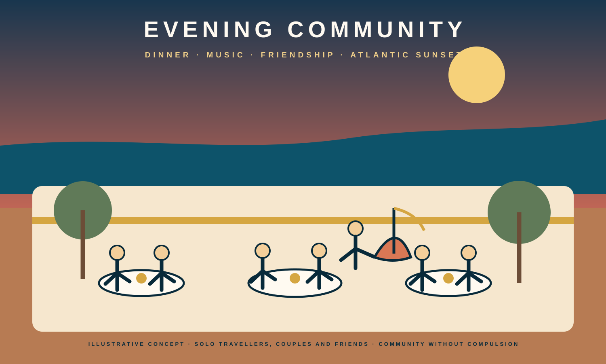
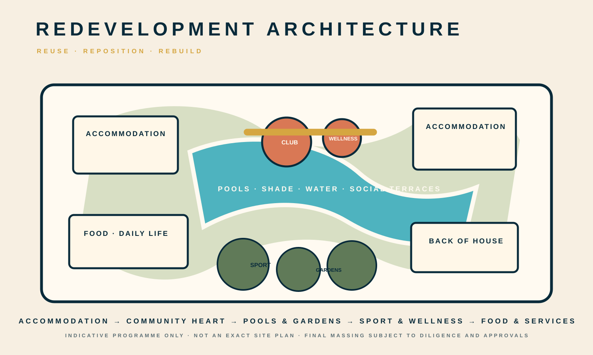

Estancias flexibles
Estancias cortas, ampliadas, estacionales y vacaciones de mayor duración compatibles con la normativa turística, sujetas al análisis jurídico y operativo final.
Suroeste de Tenerife · municipio de Adeje · Islas Canarias
Línea activa de reposicionamientoQuédate más. Vive mejor.
Una comunidad vacacional liderada por la hospitalidad, concebida principalmente para adultos independientes de 50+, que combina estancias flexibles, conexión social, deporte, bienestar y el atractivo durante todo el año del suroeste de Tenerife.

Una economía turística real
La geografía pública es deliberadamente amplia. Project Horizon se sitúa dentro de la economía turística consolidada del suroeste de Tenerife. La ubicación privada exacta, el perímetro transaccional y la propiedad no se publican en esta fase.

Las estadísticas oficiales de turismo de Tenerife registraron en Adeje, en abril de 2026, 151.547 turistas alojados, 1.097.163 pernoctaciones y una estancia media de 7,24 noches. Son indicadores de contexto del destino, no previsiones de Project Horizon.
El Aeropuerto de Tenerife Sur registró 13.969.678 pasajeros en 2025, un 1,7% más que en 2024, y Aena lo sitúa en el corazón de la zona turística del sur de la isla. Adeje renovó además su condición de Destino Turístico Inteligente para 2026–2029, con un cumplimiento metodológico comunicado del 62,8%.
Fuentes: Cabildo de Tenerife, boletín de turismo de abril de 2026; Aena, Tenerife Sur 2025; Ayuntamiento de Adeje, DTI 2026–2029.
La propuesta hotelera
El diseño parte de un modelo operativo de hotel/resort. Los huéspedes pueden llegar para unas vacaciones convencionales, quedarse más tiempo, volver por temporadas y construir familiaridad con las personas y el lugar, sin crear una venta residencial ni un producto de ocupación permanente.
Estancias cortas, ampliadas, estacionales y vacaciones de mayor duración compatibles con la normativa turística, sujetas al análisis jurídico y operativo final.
Pertenencia sin sociabilidad obligatoria: espacios compartidos vivos, zonas para grupos pequeños, salas tranquilas, jardines y terrazas privadas.
Natación, fuerza y movilidad, deportes de raqueta, caminar, bienestar, clases y excursiones, concebidos alrededor de una independencia saludable.
Alimentación, lavandería, recepción de paquetes, housekeeping flexible, almacenamiento y servicios prácticos para huéspedes que permanecen semanas además de noches.
El recorrido es conceptual, no una tarifa publicada ni una duración contractual. Project Horizon no se presenta como residencia permanente, vivienda sénior, vivienda asistida, residencia geriátrica, multipropiedad ni propiedad fraccionada.
De Sun Park a la siguiente generación
Años antes de que el «extended stay» se convirtiera en una categoría hotelera de moda, el modelo histórico de Sun Park en Lanzarote ya probaba una propuesta distinta: una comunidad vacacional orientada principalmente a mayores de 50 activos e independientes, con conexión social, repetición de visitas y estancias medidas en semanas y meses además de noches.
El material de archivo recoge un concepto HolidayLiving basado en comunidad, personas solas y parejas, actividades compartidas, un ambiente de «hogar bajo el sol» y una estancia histórica media aproximada de 12 semanas, con algunos huéspedes durante periodos más largos. Es evidencia operativa histórica, no una previsión para este proyecto.
Project Horizon traslada ese ADN operativo: inventario hotelero controlable, estancias flexibles, comunidad, relación directa con el huésped, distribución especializada y un modelo susceptible de replicación profesional.

Límite histórico: el expediente Sun Park acredita una propuesta de cliente y operación. No significa que los mismos contratos, derechos, estructura jurídica o productos continúen hoy. El expediente de recuperación Sun Park/MYND Yaiza es independiente de Project Horizon.
Reutilizar · reposicionar · reconstruir
El equipo de diseño estudia qué debe conservarse, qué debe adaptarse y qué debe sustituirse. Las estructuras y equipamientos de ocio existentes se tratan como posibles inputs, no como condicionantes que deban sobrevivir íntegramente.




La nueva comunidad
El brief actual es deliberadamente programático y no se presenta como un proyecto aprobado. El número exacto de unidades, superficie, conservación, demolición y fases siguen siendo cuestiones de diligencia.
Estudios generosos, suites de un dormitorio y algunas suites hoteleras mayores con terrazas, buenos armarios, acústica y principios de diseño universal.
Hosts de recepción, club lounge, cafetería, bar, restaurante, lectura, juegos, aprendizaje, cine, eventos, trabajo flexible y zonas silenciosas.
Natación, aqua, spa, sauna/vapor, tratamientos y espacios de movilidad/recuperación, sin implicar asistencia médica o de enfermería.
Raqueta, fitness, caminar, ciclismo, yoga/pilates y actividad de bajo impacto calibrados al emplazamiento y al caso operativo final.
Alimentación o conveniencia, restauración, lavandería, paquetería, almacenamiento de huéspedes y housekeeping flexible para mayor comodidad.
Sombra subtropical, plantación eficiente en agua, jardines, terrazas sociales y pequeños lugares tranquilos para hacer utilizable el exterior durante todo el día.
Disciplina de proyecto a libro abierto
Un proyecto vivo no equivale a una adquisición completada ni a un esquema aprobado. La distinción se hace explícita.
Comunidad vacacional liderada por la hospitalidad, principalmente para adultos independientes 50+.
No se identifica en esta página pública.
No se afirma públicamente propiedad, exclusividad, SPA ni adquisición completada.
La diligencia de propiedad y transacción continúa de forma separada.
No se afirma aquí un derecho urbanístico actual de reposicionamiento.
El programa definitivo queda sujeto a turismo y otros requisitos sectoriales.
Siguen abiertas las alternativas de reutilización, reposicionamiento y reconstrucción.
No se representa compromiso de operador.
No se representa compromiso de prestamista, inversor o financiación.
No se promete fecha de apertura ni programa de obra.
No se representa conocimiento, diálogo, apoyo, consideración o aprobación por Adeje u otra autoridad.
Conversación privada por invitación
Project Horizon es una conversación controlada para propietarios y contrapartes, operadores hoteleros, especialistas en hospitalidad para adultos activos, socios de bienestar y deporte, prestamistas, capital, urbanistas, diseñadores y equipos de ejecución.
Privado por defecto. La evidencia, material transaccional y diligencia del emplazamiento exacto permanecen fuera de la página pública.
Iniciar conversación privada